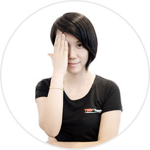
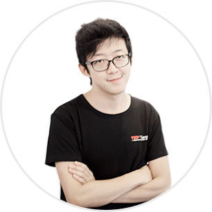
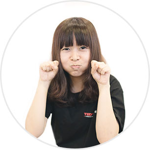
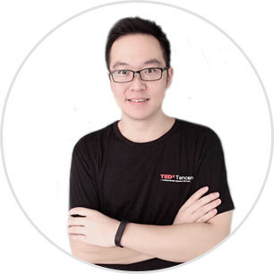
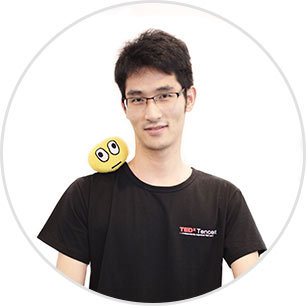
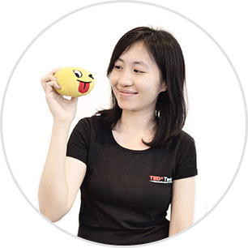

TEDxTencent
TEDxTencent is a local non-profit activitiy organized for Tencent staff based on the official license approval from TED. So far, this is the first TEDx event organized in enterprise among BAT(Baidu, Alibaba, and Tencent) around the world. We are committed to bring Tencent employees Ted's way of thinking and speech, in the meantime to mine the internal unique and innovative ideas of Tencent, to encourage thinking creators use Ted's way of speech to spread their good ideas to Tencent. TEDxTencent is organized by SNG HR center and sponsored by Tencent Academy with team members and volunteers from TEG, S2, CDC and other partners who are keen on the spreading of TEDx.
With the theme”dream beyond dream”and the invitation of Tencent internal speakers who are screened and trained after several rounds and social celebrities to speech on the same stage, the TEDxTencent 2015 is ready to bloom soon on August 5.
About Us
-

Organizer
Sukeypang -
Marketing
Lydiaguo -

Host
Novakmu -
Operating
Yongqingyang -

Marketing
Serenaqyliu -

Translator
Fredfeng -

UI Engineer
Tutuhuang -

UX Designer
Ritachou -

Visual Designer
Minni